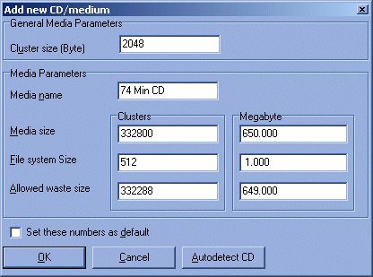

Here you can add media types you own, so BTTB knows how far to push to the limit. For CDs, using the autodetect feature is by far the easiest way.
You'll need to know the cluster size of the medium, for data CDs it's 2 KB or 2048 bytes. This is the default.
The media name can be an arbitary name so you can find this entry back in the mainscreen.
You can enter the size for the medium (media size) in # clusters or Megabyte ( = 1024 Kb or 1048576 bytes). This number is automatically rounded to compensate for the clustersize.
The space reserved for the file system should be plenty at 1 Mb.
The allowed waste size is the amount of space
you're willing to keep empty if it is not possible to make a perfectly
full CD.
If you want to make sure that BTTB never skips any files,
set this size to (Media Size) - (File System Size), as in the screenshot
above. In all other cases, files will be left.
If you set the numbers as default, all new items will have these values.
Finally, a very useful feature is autodetect CD, which reads the total stated empty space on a CD. A very easy way to fill in all data.
Note that CD makers are known to change the specifications of their CDs every once in a while without changing the CD name, so if data suddenly doesn't fit you may want to autodetect again (and perhaps look closely at the serial numbers on the package and CD for any sudden changes. You can keep up-to-date with the various types being sold at www.cdmediaworld.com).